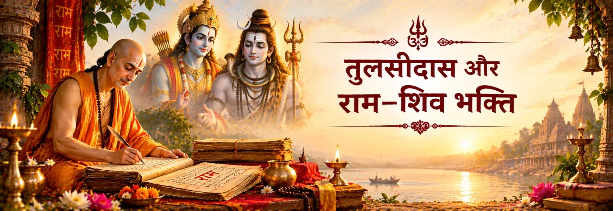

महादेव और भवानी की वंदना
तुलसीदास शिव और पार्वती का स्मरण उन पवित्र शक्तियों के रूप में करते हैं जो उनकी कथा को दिशा और कृपा देती हैं। कविता के आरम्भ में उनका स्थान मानस को शैव और वैष्णव—दोनों भक्तिपरंपराओं से जोड़ता है।

भक्ति और परंपरा
रामचरितमानस में तुलसीदास राम-भक्ति को ऐसे पवित्र संसार में रखते हैं जहाँ शिव और पार्वती की भी गहरी वंदना है। यहाँ शिव को राम का प्रतिद्वंद्वी नहीं बनाया गया; बल्कि शिव उन महान स्वरूपों में हैं जिनके माध्यम से राम की दिव्यता की स्तुति और समझ विकसित होती है।
यह भक्तिपरक दृष्टि विशेष रूप से बालकाण्ड में स्पष्ट होती है, जहाँ तुलसीदास शिव और पार्वती का स्मरण करते हैं, रामचरितमानस को शिव से जुड़ी कथा के रूप में प्रस्तुत करते हैं और पार्वती के सामने राम के स्वरूप को समझाने में शिव को केंद्रीय स्थान देते हैं।
तुलसीदास की मंगल-वंदना
राम-कथा के विस्तार से पहले ही यह संबंध स्थापित हो जाता है: तुलसीदास राम की कथा कहने से पूर्व शिव और पार्वती की कृपा का स्मरण करते हैं।
तुलसीदास शिव और पार्वती का स्मरण उन पवित्र शक्तियों के रूप में करते हैं जो उनकी कथा को दिशा और कृपा देती हैं। कविता के आरम्भ में उनका स्थान मानस को शैव और वैष्णव—दोनों भक्तिपरंपराओं से जोड़ता है।
तुलसीदास राम-कथा के वर्णन को शिव-कृपा से सम्पन्न होने वाली साधना के रूप में रखते हैं। इससे राम भक्ति का केंद्र बने रहते हैं, जबकि कथा एक पवित्र स्मरण-परंपरा के भीतर स्थापित होती है।
मानस में शिव को राम-नाम की महिमा के साथ जोड़ा गया है। राम-नाम को आध्यात्मिक शक्ति से संपन्न बताया गया है और महेश को उसकी शक्ति का गहरा ज्ञाता माना गया है।
इसलिए आरम्भिक मंगल-वंदना महत्वपूर्ण है: मानस शिव को हटाकर राम-भक्ति का निर्माण नहीं करता। वह ऐसा भक्तिपरक संसार बनाता है जहाँ शिव की श्रद्धा राम के प्रति गहन प्रेम के साथ खड़ी रहती है।
कथा के वक्ता के रूप में शिव
मानस शिव को असाधारण कथावाचक-भूमिका देता है: पवित्र कथा को शिव द्वारा चिंतित, हृदय में धारण और पार्वती को सुनाई गई परंपरा के रूप में प्रस्तुत किया जाता है।
मानस में शिव और पार्वती के संवाद के माध्यम से महत्वपूर्ण धार्मिक शिक्षा सामने आती है। पार्वती के प्रश्नों के उत्तर देते हुए शिव राम के स्वरूप को ऐसे भक्त-गुरु की दृष्टि से समझाते हैं जो राम को जानता और प्रेम करता है।
शिव–पार्वती संवाद में शिव इस विचार को अस्वीकार करते हैं कि राम केवल मोहग्रस्त या साधारण मानव हैं। वे राम को परम सत्य के रूप में पहचानते हैं और पार्वती को गहरी भक्ति की ओर ले जाते हैं।
मानस में शिव का अधिकार केवल सूखे दार्शनिक उपदेश के रूप में नहीं आता। उनके वचन भक्ति, स्मरण और राम के अंतरंग ज्ञान से निकलते हैं; इस प्रकार दर्शन भक्ति का ही हिस्सा बन जाता है।
मानस शिव, पार्वती, काकभुशुण्डि, याज्ञवल्क्य और भारद्वाज से जुड़ी कथा-परंपरा का भी वर्णन करता है। इससे राम-कथा एक ऐसी पवित्र शिक्षा के रूप में सामने आती है जो श्रद्धालु वक्ताओं और श्रोताओं के माध्यम से आगे बढ़ती है।
राम-भक्ति और शिव-भक्ति
मानस की विशिष्टताओं में एक यह है कि वह राम के बारे में अत्यंत गहन भक्ति से बोलते हुए भी शिव को सम्मानित और आध्यात्मिक रूप से प्रामाणिक स्थान देता है। यह केवल सजावटी संतुलन नहीं है। शिव बार-बार ऐसे स्वर के रूप में आते हैं जो राम की महिमा और राम-नाम की आध्यात्मिक शक्ति की पुष्टि करता है।
इससे ऐसी भक्तिपरक भाषा बनती है जिसमें दोनों परंपराएँ एक-दूसरे को प्रकाशित कर सकती हैं। मानस की राम-केंद्रित भक्ति भक्त से शिव का तिरस्कार नहीं मांगती और शिव की प्रशंसा राम के प्रति उसके प्रेम को कम नहीं करती।
Ramcharitmanas · Bala Kanda·Bala Kanda · Rama Nama and Shiva·Bala Kanda · Shiva and Parvati·Uttar Kanda · Invocations
भक्त के लिए
तुलसीदास की दृष्टि भक्त को राम-भक्ति में प्रवेश करने के लिए आमंत्रित करती है, पर भक्ति को देव-नामों की प्रतिस्पर्धा नहीं बनाती। शिव को राम-महिमा के महान उपदेशक के रूप में श्रद्धा दी जा सकती है और राम मानस के प्रिय केंद्र बने रहते हैं। इस साझा पवित्र क्षेत्र में भक्ति सीमा नहीं, सेतु बन जाती है।
भक्तों के सामान्य प्रश्न
बालकाण्ड शिव और पार्वती को कथा-वाचन के लिए कृपा और संरक्षण देने वाली पवित्र शक्तियों के रूप में स्मरण करता है। इससे राम-कथा एक व्यापक भक्तिपरक संसार में स्थापित होती है, जहाँ राम-भक्ति शिव-श्रद्धा से अलग नहीं है।
शिव को पूज्य दिव्य उपस्थिति के रूप में स्मरण किया जाता है, राम-नाम की महिमा से जोड़ा जाता है और ऐसे गुरु के रूप में प्रस्तुत किया जाता है जो पार्वती को राम के परम स्वरूप को समझाते हैं। इसलिए वे भक्तिपरक परिवेश और कथा-वाणी—दोनों में महत्वपूर्ण हैं।
यहाँ देखे गए प्रसंग इसके विपरीत दिशा में संकेत करते हैं। मानस शिव का सम्मान करते हुए राम-भक्ति को केंद्र में रखता है और स्वयं शिव को राम की महिमा के वक्ता के रूप में प्रस्तुत करता है। भक्तिपरक संरचना प्रतिस्पर्धा के बजाय साझा श्रद्धा की है।
नहीं। रामचरितमानस अवधी में रची गई बाद की भक्तिपरक रामकथा है, जिसकी अपनी धार्मिक दृष्टि और कथा-प्रस्तुति है। इसे वाल्मीकि के महाकाव्य के साथ पढ़ा जा सकता है, लेकिन राम, शिव और भक्ति से जुड़े इसके विशिष्ट शिक्षण को मानस-परंपरा से ही जोड़ना चाहिए।